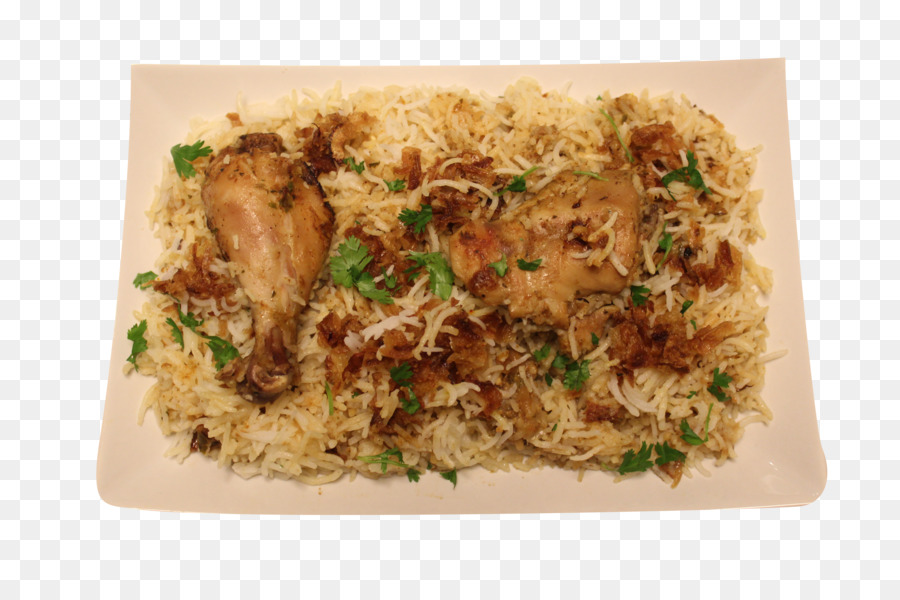

Chicken And Rice

Be aware your food will look nothing like this picture, the image is merely to show i can indeed add an image to my webpage.
This recipe is for a simple and quite bland meal of, you guessed it, chicken and rice. however i will be adding in some vegetables and beans to spice things up.
However simple and bland this meal is, it does contain an ample amount of protein and carbs.
Ingredients
- Chicken breast
- Rice
- Kidney beans
- Sweetcorn
Steps
- Start with beginning to cook your rice, if you dont know how to do that, its too late for you.
- Cut your chicken breasts in half and start to cook them in your preffered way, with your preffered seasoning.
- Whilst both your chicken, and rice, are cooking, add your sweetcorn and kidney beans to a sieve and rinse them. once rinsed, add to a large tupperware container.
- Once your rice has cooked you can add that to the tupperware container and mix well with the sweetcorn and kidney beans.
- next add your cooked chicken to the tupperware container, and you're done, congratulations.
Now you have meal prep for around 3 days for your inbetween meals, bulking snacks.